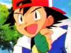
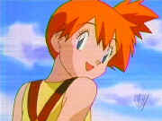
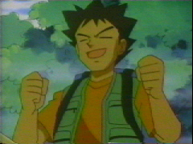
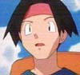
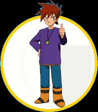
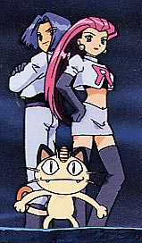
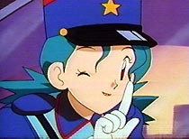
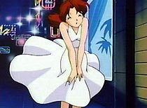
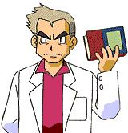

|  | Ash is an ambitious 10 year old with an aspiration to become a Pokemon master and has not only the want to be the best, but also a love for his pokemon. In the first episode, Professor Oak gives him an unusual pokemon called Pikachu. Ash soon finds out all about Pikachu's "electric" power, and finds himself being owned by the stubborn little pokemon than owning him. After failed attempts to catch more pokemon, Ash soon finds Misty, and takes her bike to get Pikachu to a hospital in order to treat its injuries, and the bike is eventually destroyed. Luckily, Ash gets Pikachu to the hospital fine, and the two bond and become eternal friends in the land of Pokemon. |
|  | Misty is seemingly a brat, but on the inside she is really a good girl. She is nice to everyone, except Ash. She always is bothering him about her bike, and what he's going to do to replace it. She loves water pokemon, and travelling with Ash and Brock is really what she enjoys doing. |
|  | Brock is the older, woman-crazy male of the travelling trio. Of course, the females are mostly bimbos, excluding Misty, and don't take it to heart, if they even understand it. Brock's eyes never seem to open, and it just makes you wonder how he sees these women, of course by the way the ones look that he falls in love with, this is evident. A former Gym leader possessing the Boulder badge, Brock prefers rock and fire pokemon. Brock later decides to stay with Professor Ivy on Valencia to help with her Pokémon research |
| Pikachu is definately the most popular and lovable pokemon. His cuteness has captures the love of millions of watchers and players. He kicks butt, and tags along outside of his pokeball with Ash. Pikachu is also the target of Team Rocket's evil plans most of the time --they're constantly trying to capture poor Pikachu! |
|  | Tracey is a new character that joins Ash and Misty after Brock leaves them to help Professor Ivy with her Pokémon research in Valencia. Tracey loves Pokémon, and loves learning about them, as well as sketching pictures of every new Pokémon he runs across! He later starts to work with his idol, Professor Oak, leaving Brock free to explore with Ash and Misty again. |
|  | Gary is the self-centered opponent to Ash. He seems to think he's the best Pokemon trainer in the world, and so does his little herd of cheerleaders that seem to cheer him on everywhere. Although he is very cocky, he is a good trainer. But, he doesn't seem to really enjoy pokemon, more just the winning and competition. |
|  | Jesse and James are just two little kids stuck in a pre-teens body. They always wind up loosing in the end, as is expected of every bad guy in cartoons. Their goal, being in Team Rocket, is to steal precious and rare pokemon, especially the powerful pikachu of Ash. Everytime they appear in the show they say their famous poem... "Prepare for trouble, Make it double. To protect the world from devestation, To unite all peoples within our nation. To denounce the evils of truth and love, To extend our reach to the stars above. Jessie, James. Team Rocket blast off at the speed of light! Surrender now, or prepare to fight." |
 |
"Meowth thats right" is the first line after Jesse and James little poem. Meowth is sort of like Pikachu in that he does not stay in a pokeball. However, meowth is a very rare pokemon who can actually speak. At least Team Rocket caught one good pokemon. Meowth is really the brains of the Team Rocket Triple, as he comes up with most of the plans, and scratches Jessie and James into submission. |
| Nurse Joy and all of her sisters with the same name and same look are found in nearly every town in the land of Pokemon. She works at the Pokecenter healing hurt pokemon. There are slight differences in each Nurse Joy found in different towns! As Brock points out in one episode, they each have a different color on their cross! Brock is also love-stricken with each Nurse Joy, usually failing in his attempts. |
|  | Officer Jenny is your average female often found in each Pokemon town. She usually does her police work, like try to stop Team Rocket and train her Growliths. Every Jenny found in different towns wear a unique symbol, which Brock uses to distinguish each of them! Brock is also love-stricken with each Officer Jenny, usually failing in his attempts. |
|  | Ash's mom is just your average motherly figure, who wont stop asking Ash if he has clean underwear and to be safe, etc, etc. |
|  | Professor Oak is the person to call when you need pokemon info. In younger ages he was a trainer just like most others. But now in his old age, he studies pokemon, and created the pokedex for trainers to learn info on pokemon and write info about when you come across new pokemon. He gave Ash Pikachu, and takes care of his other pokemon. |